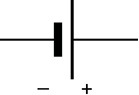
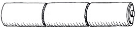
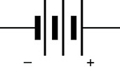
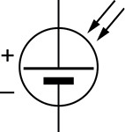
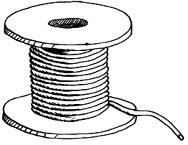
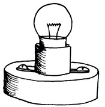

Chapter 7
Electrical systems and control
In this chapter, you will learn how to make light bulbs light up by building electric circuits. You'll learn about circuit components, input and output devices, and control devices such as switches. Finally, you will learn how to draw these components in circuit diagrams, using the correct symbols.
Explore simple circuits
Make bulbs light up
You need all the components (parts) shown in Figure 2 to do this activity.
Divide into teams of four to six learners. Two teams can work together if there is only one cell per team. Discuss the following in your teams, and do the experiments:
- Find out how to connect the parts to make the bulb light up. Find three or more ways to make the bulb light up.
- Touch the glowing bulb using your fingers. What does it feel like?
- Look inside the glass part of the bulb. Which part of the bulb gets hot?
- What happens when you connect two cells instead of one cell?
- How can you make the bulb flash on and off?
From this activity you found that a bulb will glow only if the wires touch it on the screw contact and the solder knob at the bottom.
You found that you must connect metal parts to make a path from the knob of a cell, through the bulb, and back to the flat end of a cell. This path is called a circuit. The current will not flow if there is a gap in the path of the conductors.
An electric circuit is a complete path of conductors. The cells cause a current of electricity to flow around the circuit. The current will flow only if the circuit has no breaks in it.
The cells provide the energy to make the electricity flow through the circuit, and the electricity flowing through the "filament wire" inside the light bulb makes it glow.
Cells use a chemical reaction to make electricity flow through a circuit. In Chapter 9, you will learn more about the chemical reactions in a cell.
The voltage of a cell
The cells have a number, for instance "1,5 V", printed on them. Find that number on your cells. The number represents 1,5 volts. You say that the cell has a voltage of 1,5 volts.
When you connected two cells end-to-end you made a two-cell battery with a voltage of 3 volts. The 3 volt battery can give more energy to the bulb and so the bulb will glow much brighter.
When two or more cells are connected to provide electrical current to a circuit, you call it a battery of cells, or simply a battery. You can also call a single cell a battery.
Connecting bulbs in series
For this activity, you will need the following:
- a battery made from three cells in series ina cell holder (the cells must be fairly new),
- three bulbs in bulb holders,
- connecting wires,
- a push switch, and
- a small piece of paper with
the words"indicator bulb" on it.
You can make a simple cell holder by rolling three cells in a sheet of A4 paper. Put sticky-tape on the rolled-up paper to keep it in place and around the ends of the battery. Push the wires under the tape, to touch the battery terminals.
You can make a push switch from a piece of stiff plastic and two metal paper-fasteners. A push switch only makes electrical contact while you keep it pressed in.
Set up the circuit shown in Figure 3. Press the switch to make the bulb glow, and notice how brightly it glows. This first bulb will be your indicator bulb.
If the indicator bulb is bright, the current is big. If the indicator bulb is dim, the current is small.
Now connect another bulb in the circuit as shown in Figure 4.
Cover the new bulb with your hand and look only at the indicator bulb. The indicator bulb is not as bright as before. What do you know about a current that has to run through two bulbs?
Connect a third bulb to the circuit as shown in Figure 5.
Cover both new bulbs with your hand and look only at the indicator bulb. How has the current changed?
Series connection
When we connect bulbs with only one path for the current, as in Figure 5, we say that the bulbs are connected "in series". The current must go through each bulb in the row.
1. What will happen if you add a fourth bulb?
2. If we add more bulbs to the circuit in series, the indicator bulb will glow more dimly. This tells us that if we add more ........... the current becomes
Resistance
The same battery can produce big and small currents. The current depends on the resistance.
As we add more bulbs in series, the battery finds it harder to push current around the circuit, and the current becomes smaller and smaller. The reason is that the filament wire in each bulb has resistance. The bulbs have resistance and therefore we say they are "resistors".
The bigger the resistance, the smaller the current.
- Good conductors have low resistance, bad conductors have high resistance. Examples of good conductors are copper, gold, silver and aluminium. They have low resistance.
- Examples of medium or bad conductors are tungsten, graphite − the black compound in your pencil − and nichrome. They do conduct electricity, but not very well. The filament-wire in a bulb is made of tungsten.
- Examples of very bad conductors are plastic, glass and wood. They have such high resistance that a battery cannot make any current flow through them. We say they are good "insulators". The plastic covering on electrical wire is the insulator for the wire.
Nichrome is an alloy (mix) of nickel and chromium. It is often used in electrical appliances such as heating elements since it has a high resistance.
Parallel connections: two, three or more paths for current
Figure 4 shows two light bulbs connected in series to make them light up. Connect them again and try to remember how brightly they glow.
Now connect the two light bulbs in a different way, as shown in Figure 6 below.
Both bulbs light up when you press the switch, but now they burn brighter than they did when they were connected as in Figure 4.
All the current provided by the cell passes through the red wire. But that current is split between the two blue wires.
When resistors are connected in a circuit so the current is split between the resistors, you say that the resistors are connected in âparallelâ.
Connect three resistors in parallel
For this activity, you will need:
- a battery of 3 good cells,
- 4 bulbs in bulb holders,
- a press switch, and
- 8 connecting wires.
Look at the circuit in Figure 7.
1. How many paths for a current can you see? With your finger, follow the paths for a current from the positive terminal of the battery through the bulbs, to the negative terminal of the battery.
2. Will the indicator bulb be as bright, brighter or dimmer than in Figure 6?
3. Test your idea. Make the circuit in Figure 6 and then add a bulb as in Figure 7
4. Was your idea correct?
When you connect bulbs so that the current has two or more paths to go through, you are connecting bulbs in parallel.
If you make more parallel paths for current, the battery can put out more current.
This is the same as saying that if you add more paths in parallel, then the resistance in the circuit becomes less.
Short circuits
Look at the circuit in Figure 8. Someone has made a mistake and connected the orange wire from the terminal to the switch.

Find the orange wire. Does it have a bulb connected to it?
This wire is a zero-resistance path for current. If you press the switch, the battery will put out as much current as it possibly can. It will do that because it finds a zero-resistance path.
Almost all of the current supplied by the battery will go through the orange wire, and only a very small amount of current will go through the bulb.
The battery will put out its energy as fast as it possibly can. Therefore it will get hot and it will be "dead" or "flat" in about 10 minutes.
The person's mistake was to make a parallel path for a current with the wire. We call that path a short circuit.
A short circuit is a parallel path for current that has almost zero resistance.
5. Why does the bulb not glow if you make a short circuit path?
6. What happens to the wire forming the short circuit? Why?
7. Look at Figure 9. The bulb is glowing, but if you press the switch, the bulb stops glowing. Explain the problem, and draw a picture on the next page to show how you would connect the circuit in the correct way. The bulb should glow only when you press the switch.


Why short circuits are dangerous
ESKOM supplies energy at 230 volts which can make a heater red-hot. This is safe in a heater, since only the resistor in the heater gets hot, and not the wires from the plug. But if the insulation is broken on the wires, the wires may touch each other and create a short circuit. The current will not go through the heater, but take another path along the wires instead. The current will give off all of its energy to the wires. Then the wires can become red-hot and set fire to something.
All electrical appliances must only be used in the way the manufacturer recommends. Never attempt to fix a broken electrical appliance without expert help, and always make sure that appliances are switched off, or even unplugged when not in use.
Input, output and control devices in a circuit
An electrical circuit uses an input of electrical energy to provide an output of some type of energy. Examples are described below:
- A light bulb uses the input of electrical energy provided by a battery to give the output of light. You can say that a light bulbs converts electrical energy into light energy.
- The resistance wire or element in a kettle gives an output of heat energy.
- The loudspeaker of a radio converts an output of sound energy. This means that it gives out sound from the energy that is going into it.
- An electric motor gives an output of movement or kinetic energy.
We can use a systems diagram to describe an electrical circuit:
energy input ➱ control device ➱ energy output

Bulbs, heaters and other output devices have resistance. That means the electricity loses energy as it passes through the device, and it transfers the energy to the device. So a bulb is a resistor, and a heater element is also a resistor.
Output devices have resistance.
Control devices
We want to switch circuits on and off, control how much energy output we get from a circuit, or control how much current flows in certain parts of the circuit. We can do this with the use of control devices. Examples of control devices are switches, dimmer-switches and resistors.
You have seen a light-switch on the wall of a room. That type of switch is called a "rocker switch". A "press switch" is used for doorbells. It completes the circuit only while you press it in. A "slide switch" is used for table lamps.
A "dimmer switch" lets you control the brightness of the lights in a room. A dimmer switch uses a resistor that allows you to control the current by twisting a knob. This is called a variable resistor.
To "vary" means to change, so this device is called a variable resistor.
Some resistors are not variable, and they have a fixed (unchanging) resistance. When you design a circuit, you can choose a resistor with the right amount of resistance to control the current in a part of the circuit.
In Grade 9, you will learn about more types of control devices.
Design and make a switch – different types of switches
A switch has a gap where the conductors do not make contact.
- When you press the switch, you complete thecircuit and the current can flow through. You have closed the switch.
- When you move the switch to break the circuit,you have opened the switch.
To switch on a circuit, you close the switch. To switch off a circuit, you open the switch.
For this activity, you will need:
- a circuit with a battery,
- an output device such as a bulb, beeper or motor, and
- the materials and tools you need to make a switch.
1. Design and make your switch.
2. Test your switch.
Different switches can work in different ways, for example the switch can:
- close only while you press it,
- close and stay closed even after you remove your hand,
- close when somebody lifts up a heavy object,
- close when somebody opens a door, or
- close after a certain number of minutes.
3. Look at the ideas for switches in Figure 13. Explain how each one will work.
(a) Switch A:
(b) Switch B:
(c) Switch C:
(d) Switch D:
(e) Switch E:
The symbols used to draw circuit diagrams
After you have worked with real electric circuits, you can start drawing them with symbols instead of trying to draw what the circuit really looks like. Engineers, scientists and technicians mostly use symbols and diagrams.
A list of symbols for different electrical components is given on the following two pages. In Grade 9, you will learn the symbols for even more components.
|
Picture of the part |
Symbol for the part |
Name of the part |
|
Input devices |
||
|
|
 |
A single cell: These cells usually give 1,5 volts. |
|
 |
 |
A battery of three cells in series, usually giving 4,5 volts. |
|
|
|
A generator converts rotational movement into electricity, by using a magnet and coils of copper wire. |
|
|
 |
A photo-voltaic cell: This input device changes light energy into electricity. |
|
|
|
Any good conductor: Usually it is a wire or copper strip, but a fork or a coin could also be a conductor. |


|
Control devices |
||
|
|
|
a switch |
|

|
|
A resistor: This can be made from nichrome wire that is a weak conductor, or from graphite as in a "carbon resistor". |
|
|
|
A variable resistor: Dimmer switches are variable resistors. The picture of the bottom of a variable resistor shows the coiled resistance wire inside it. |
|
Output devices |
||
|
 |
|
A bulb, also called a lamp: Bulbs are also resistors. |
|
|
|
A heater: The resistance wire in a heater gets hot when electrical current flows throw it. |
|
|
|
A buzzer or a beeper produces sound as an output. |
|
|
|
An electric motor: It converts electrical energy into rotational movement. It is similar to a generator, but works in reverse. |


Homework: revision
1. Draw the circuit diagram for Figure 4 below:
2. Draw the circuit diagram for Figure 6 below, but show a beeper connected in parallel with a bulb instead of two bulbs in parallel.
Next week
Next week, you will learn about different energy sources that people use to provide them with heat and light.